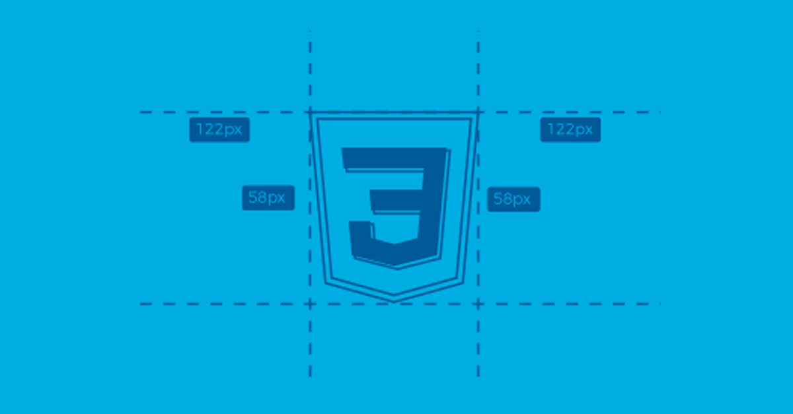

📰 TecnoBlog 💻
ğŸ Home |
📠Blogs |
🉠Eventos |
📩 Contato
📌 Últimas Postagens
📖 Como estudar HTML
Autor: Thiago Henrique | 📅 26/08/2025

O HTML é a base de toda página web. Ele define a estrutura e a organização do conteúdo. Para estudar melhor:
- 👉 Pratique criando páginas simples
- 👉 Use editores como VS Code
- 👉 Leia a documentação oficial
🔗 Leia Mais...
🨠Como estudar CSS
Autor: Thiago Henrique | 📅 26/08/2025

O CSS é o responsável pelo estilo das páginas. Com ele você pode:
- Alterar cores e fontes
- Trabalhar com layouts responsivos
- Criar animações
"Design não é apenas como parece, é como funciona." – Steve Jobs
🔗 Leia Mais...
⚡ Como estudar JavaScript
Autor: Thiago Henrique | 📅 26/08/2025

O JavaScript dá vida às páginas web
O JavaScript torna o site dinâmico e interativo. Exemplos de uso:
| Área |
Exemplo |
| Validação |
Formulários interativos |
| Animações |
Menus, sliders, carrosséis |
| Integração |
APIs e consumo de dados |
🔗 Leia Mais...